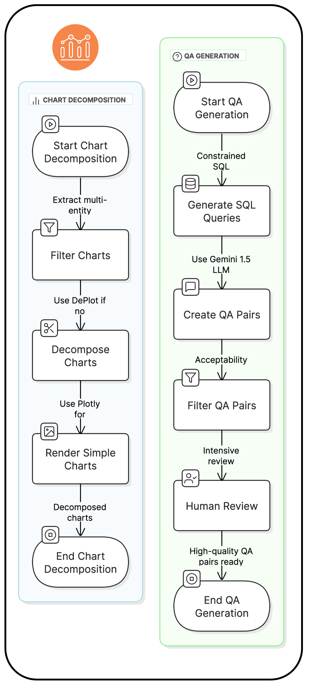
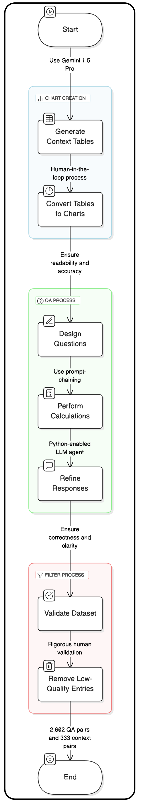
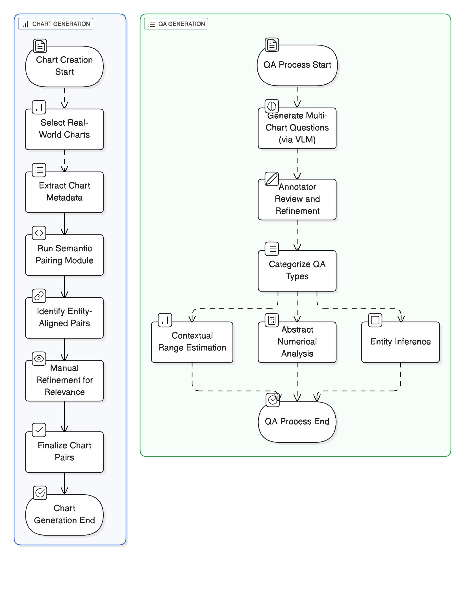

Back to Home
Data-Generation Flowcharts
Swipe through Flowcharts for each set of dataset.
DECAF

DECAF: decomposed factual QAs from single charts with human filtering.
SPECTRA

SPECTRA: correlated vs. independent paired charts with templated QAs and validation.
STORM

STORM: real-world chart pairs and semantic reasoning prompts, with agreement checks.